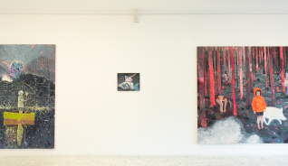

Tina Dobrajc

Slavic Fusion
Olje na platno 77 × 99 cm
2018
Slikarska dela akademske slikarke Tine Dobrajc odlikuje svojevrstna prepoznavna ikonografija, kjer umetnica prepleta tradicijo s sodobnostjo, pri čimer se navdihuje zlasti v slovenski folklorni zapuščini in mitologiji na eni strani ter v množični kulturi in filmu na drugi strani. V delih Dobrajčeva pogosto raziskuje, prevprašuje in na-novo definira zlasti položaj ženske v sodobni (slovenski) družbi. Večinoma ustvarja (večja) slikarska dela, deluje pa tudi na področju ilustracije in gledališke scenografije.

Slavic Fusion
Olje na platno 77 × 99 cm
2018
Biography
Akademska slikarka Tina Dobrajc se je rodila leta 1984 v Kranju. Leta 2007 je diplomirala na Akademiji za likovno umetnost in oblikovanje v Ljubljani ter nato na isti akademiji pod mentorstvom profesorja Hermana Gvardjančiča leta 2011 zaključila še magistrski študij slikarstva.
Njeno umetniško ustvarjanje je bilo opaženo in prepoznano že zgodaj v njeni karieri; leta 2011 je bila nominirana za ESSL art award, leta 2015 je prejela priznanje Riharda Jakopiča za mlade umetnike, leto kasneje pa je za svoje ilustacije prejela plaketo Hinka Smekarja. Sodelovala je na več samostojnih in skupinskih razstavah doma in v tujini.
Njena slikarska dela so večinoma večjih dimenzij, v tehniki akril (in mešana tehnika) na platno, čemur umetnica na platno občasno dodaja še umetne rože/volno/perle. Prevladujejo temnejše barve v kombinaciji s pogostim svetlim ali barvno intenzivnem poudarkom.
Tina Dobrajc sega na področje slikarskega izražanja, ki v svoji biti združuje domačnost, milino ter hkrati krutost, neusmiljenost. Slikarka nagovarja gledalca neposredno,
saj njene ženske figure zrejo iz slik in s svojo naturalistično upodobitvijo skorajda vstopajo v prostor. Te figure so neizprosne posameznice in aktivne članice družbe. Čeprav so pogosto ujete v ljubke podobe deklic, je njihova drža vseprej kot naivna in sramežljiva, saj zavzemajo z jasno mesto, ki jim pritiče v okolju.
Z navdihovanjem v slovenski folklorni zgodovini, zlasti s poseganjem po posameznih predmetih, ki imajo močno simboliko, Dobrajčeva (sodobne) ženske postavi v novo okolje, nov kontekst.
Pogost je motiv avbe (oz. slovenske narodne noše), ki je pogosto označevalka tradicije, ritualnega prehoda dekleta v odraslo žensko, ki pa se v Dobrajčenih delih pojavlja skupaj z ne-tradicionalnimi simboli - skupaj z razgaljenim ženskim telesom/ oprsjem/ sodobnimi mladostnimi oblačili. Umetnica tako pogosto združuje, zgodovinsko gledano, ne-združljive elemente - avba je postavljena skupaj s spolno osvobojenim telesom – ker ustvarja novo področje širšega in svobodnejšega razmisleka o ženski in njeni poziciji tako v sodobni družbi kot v nacionalnem zgodovinskem izročilu.
Slavic Fusion
Olje na platno 77 × 99 cm
2018

Slavic Fusion
Olje na platno 77 × 99 cm
2018
Exhibitions

Sove niso, kar se zdijo
Galerija Miklova hiša v Ribnici, Ribnica
2022
Balkanske obljube
Galerija Y, Ljubljana
2022
Žival sem, ujeta v tvoj vroč beton
Galerija Kresija, Ljubljana
2020
Prazne so grape
Mestna Galerija Nova Gorica, Nova Gorica
2020
2016
Na senčni strani Alp
Galerija AS, Ljubljana
The mother of the world
Galerija Equrna, Ljubljana
2013
Nonfavoloso mondo favoloso / Nepravljični pravljični svet
Galerija TK, Tržaška knjigarna, Trst
2012
Wunderkammer; Deposed/Exposed
Tovarna umetnosti, Galerija Tenzor, Majšperk/Ptuj, Majšperk, Ptuj
2016
Na senčni strani Alp
Galerija AS, Ljubljana
The mother of the world
Galerija Equrna, Ljubljana
2013
Nonfavoloso mondo favoloso / Nepravljični pravljični svet
Galerija TK, Tržaška knjigarna, Trst
2012
Wunderkammer; Deposed/Exposed
Tovarna umetnosti, Galerija Tenzor, Majšperk/Ptuj, Majšperk, Ptuj

Slavic Fusion
Olje na platno 77 × 99 cm
2018

Slavic Fusion
Olje na platno 77 × 99 cm
2018
Awards & recognitions
2016
Plaketa Hinka Smrekarja
Plaketa Hinka Smrekarja za ilustratorski projekt: Kurent, MK, Ljubljana
Delovna štipendija Ministrstva za kulturo
Prejemnica delovne štipendije Ministrstva za kulturo na področju vizualnih umetnosti za projekt Velika Dekleta ne jočejo/Big Girls don't cry, Ljubljana
2015
Priznanje Riharda Jakopiča
Priznanje Riharda Jakopiča za mlade umetnike, Ljubljana
2011
ESSL Art Award Nomination
Nominiranka za nagrado ESSL art award, Ljubljana
Slavic Fusion
Olje na platno
77 × 99 cm
2018
For any inquiries about our artworks, please contact us.